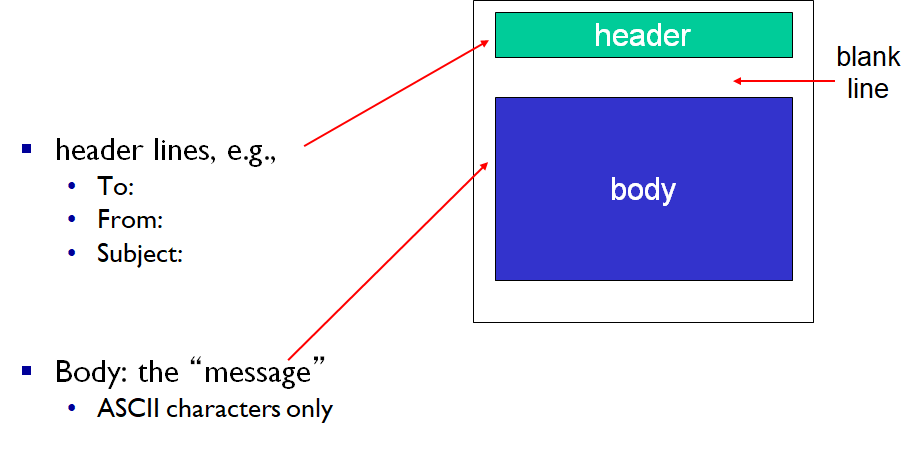

컴퓨터 네트워크 - 이메일과 DNS
Computer-Netowork-Email-and-DNS
세 주요 컴포넌트
- User Agents
- 메일 서버
- SMTP (Simple Mail Transfer Protocol)
User Agent
- 메일 리더
- 메일을 쓰고, 편집하고, 읽음
- Outlook, Thunderbird 등
- 들어오고 나가는 메세지들은 서버에 저장됨
메일 서버
- Mailbox
- 유저에게 온 메세지들을 담음
- Message Queue
- 보내질 메세지들을 일시적으로 담는 큐
- SMTP 프로토콜
- 메일 서버간에 이메일 메세지들을 보낼 때 사용됨
- 클라이언트: 메세지를 전송하는 메일 서버
- 서버: 메세지를 받는 메일서버
SMTP
- TCP
- 신뢰성 있는 전송을 위해
- 25번 포트
- Direct Transfer
- 직접 TCP 연결을 통해 메일 서버들이 통신하며 메세지를 주고받음
- 단계
- Handshaking
- 메세지 전송
- 통신 종료
- Command/Response Interaction
- HTTP와 유사
- commands: ASCII
- response: 상태 코드 등
- 메세지는 반드시 7bit ASCII로 되어 있어야 함
- Persistent connection을 사용
- 메세지의 끝은
. 로 구분 - EOL=CRLF=New Line
메일이 보내지는 과정
- Alice가 UA를 통해 메세지 작성
- Alice의 UA는 메일 서버에게 메세지를 보냄
- 해당 메세지는 메일 서버의 Message Queue에 들어감
- Alice의 메일 서버가 SMTP를통해 TCP 연결 요청 → Bob의 메일 서버로
- SMTP 클라이언트 (Alice의 메일 서버)는 TCP 연결을 통해 Bob의 메일 서버에 메세지 전송
- Bob의 메일 서버는 Bob의 메일박스에 메세지 저장
- Bob은 UA를 사용해 메세지 확인
SMTP와 HTTP 비교
- HTTP: 데이터를 Pull
- SMTP: 데이터를 Push
- 양쪽 모두 ASCII 기반 command/response interaction과 status code를 사용
- HTTP는 각각의 오브젝트가 하나의 Response 메세지에 포함되어 전송
- SMTP는 각각의 오브젝트가 여러개의 메세지에 담겨 전송될 수 있음
Mail Message Format

Mail Access Protocols
메일 서버에서 UA를 통해 메세지를 가지고 올 때 사용
- POP
- IMAP
- POP보다 더 많은 기능
- HTTP
- Google, Hotmail 등
POP3

- Download and Delete Mode
- 메세지를 읽으면 서버에서는 삭제된다
- Download and Keep Mode
- 메세지를 읽어도 메세지의 사본이 서버에 유지된다
- POP3 = Stateless
- 지난 연결에 대한 상태 정보를 가지고 있지 않다
IMAP
- 모든 메세지가 한곳 (서버) 에 저장된다
- 유저가 메세지들을 폴더를 통해 관리할 수 있다
- 상태 정보를 유지
- 폴더 이름
- 메세지 ID와 폴더 이름의 매핑 등
3. DNS (Domain Name System)
IP 주소와 도메인 네임을 어떻게 연결하는가?
- 분산된 데이터베이스
- 네임 서버로 이루어진 계층화된 시스템
- 애플리케이션 프로토콜
- 호스트와 네임서버가 통신
- 코어 인터넷 펑션이지만 애플리케이션 단에서 구현
- 코어 단에서 구현하면 너무 복잡해지기 때문
DNS Services
- Hostname을 IP 주소로 변환
- Host aliasing
- Canonical (실제) Hostname과 더불어 별도의 alias names을 관리
- 예) w2.east-asia.ibmserver.com → www.ibm.com
- 트래픽 분산
- 한 HostName을 여러개의 IP 주소에다 배정할 수 있다.
- DNS가 로드 밸런싱도 해주네
- 한 HostName을 여러개의 IP 주소에다 배정할 수 있다.
- 왜 중앙집중화 되어있지 않나
- 어떤 재해로 인해 모든 지구상 호스트가 해당 DNS 서버에 접속불가라면?
- 끔찍하지..
- 해당 주변의 네트워크 트래픽 관리를 위해
- DNS서버가 먼 해외에 있다면?
- 인터넷 접속에 지연이 심해질 것
- 유지보수를 위해
- 단 하나의 DNS 서버만 존재한다면 서버를 끄기가 조심스러워 지겠지
- 즉 확장성이 없다!
- 어떤 재해로 인해 모든 지구상 호스트가 해당 DNS 서버에 접속불가라면?
DNS 계층 구조

Root name servers
- DNS query를 받은 로컬 DNS 서버가 hostname을 알지 못할 때 질의받음
- 얘도 모를 경우 Authoritative name server에 질의함
TLD (Top-Level Domain) servers
- 최상위 도메인 (TLD) 관련하여 책임짐
Authoritative DNS server
- 기관이나 인터넷 서비스 운영자가 운영, 관리
- 자기들이 이름붙인 호스트들과 그 IP들을 매핑하는 정보를 관리
Local DNS name server
- 계층에 그렇게 단단히 구성되어 있지는 않다
- 각각의 ISP는 하나 이상의 DNS를 가지고 있다
- 호스트에서 DNS query를 받으면
- 먼저 캐시를 살펴봐서 정보가 있다면 그걸로 응답 (권위 없는 응답)
- 만약 캐시에 없다면 프록시로 동작, 다른 DNS 서버에 query를 포워딩
- 캐시 된 정보는 out of date 된 정보일 수도 있다
4. DNS Name Resolution 과정
Iterated Query

“나는 잘 모르겠으니 이 서버에다가 물어봐”
- 호스트가 로컬 DNS 서버에 질의
- “나 mail.naver.com에 접속하고 싶은데 IP 뭐야”
- 로컬 DNS 서버에 해당 정보 캐시가 없으면 Root에 질의
- Root에도 없으면 Root가 말함
- “나는 잘 모르겠으니 TLD DNS server (com) 에다 물어봐”
- 하고 해당 정보를 알려줌
- 로컬 DNS 서버는 그 정보를 가지고 TLD DNS server에 질의
- TLD DNS server에도 없으면 TLD 서버가 말함
- “나는 잘 모르겠으니 Authoritative DNS server (naver.com) 에다 물어봐”
- 하고 해당 정보를 알려줌
- Authoritative DNS server는 실제 해당 매핑을 관리하는 주체이기 때문에 무조건 알고있음 (권위 있는 응답)
- 로컬 DNS 서버는 최종 응답을 받았고 그 정보를 호스트에다가 전달해줌
Recursive Query

“로컬 DNS 서버도 다음 DNS 서버에 하청을 준다”
- 호스트가 로컬 DNS 서버에 질의
- 로컬 DNS에 해당 정보 캐시가 없으면 Root에 질의
- Root에도 없으면 Root가 TLD DNS server에 질의
- TLD DNS server에도 없으면 TLD DNS server가 Authoritative DNS server에 질의
- 이렇게 Recursive하게 응답을 받고 받고 받아서
- 로컬 DNS 서버가 호스트에게 최종응답 전달
DNS 캐싱
- 네임 서버가 HostName-IP 매핑을 알게 되면 캐시함
- 단 TTL이 있다
- 이 캐시 정보가 오래된 정보일 수 있음
- 도메인 할당할때 많이 겪어봤지?
- 당장 업데이트 해달라고 요쳥할 수도 있음
- RFC2136
DNS 레코드
RR = 네임 서버가 관리하는 DNS 데이터 엔트리
RR Format = (name, value, type, TTL)
Type A
- name : hostname
- value: IP address
- ex) (www.naver.com, 152.142.67.41, A, 100)
Type NS
- name: domain
- value: 해당 도메인을 관리하고 있는 네임 서버를 지정
- 웹호스팅이나 Cloudflare할 때 네임서버 지정했던거
- ex) (naver.com, ns1.cloudflare.com, NS, 100)
Type CNAME
- name: 별명 정보
- value: 실제 (canonical) 도메인
- ex) (www.ibm.com, w3.east.asia.ibm.com, CNAME, 100)
Type MX
- value: name에 연결될 메일 서버의 주소
- ex) (ibm.com, mail.ibm.com, MX, 100)
DNS 프로토콜 메세지 구조
Query와 Reply 메세지가 있으며, 둘은 같은 메세지 포맷을 공유한다.

메세지 헤더
- Identification
- DNS query와 해당 query를 위한 reply는 같은 값의 Identification을 가진다.
- Flags
- query 메세지다
- reply 메세지다
- Recursion 방식으로 해주세요
- Recursion 방식이 가능하다
- Reply가 Authoriative이다 (캐시된 정보가 아니다)
- Questions
- Query 내용
- Answers
- RR 형태로 답이 옴
DNS 레코드 넣기
사설 네임서버를 쓸 만큼 큰 회사라고 가정했을 때
- DNS 등록자에게 내 도메인과 네임서버 정보 등록
- 도메인, Authoritative name server, IP address 제출
- (mydomain.com, ns1.mydomain.com, NS, 1600)
- (ns1.mydomain.com, 222.111.212.111, A, 1600)
- 사설 네임서버 안에서 www.mydomain.com에 연결할 IP라던가
- MX로 메일서버를 연결한다던가 하면 됨